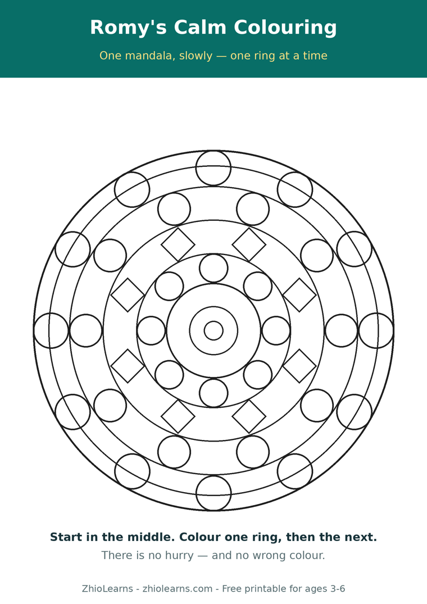

Ten Quiet Minutes: Why Colouring One Page at a Time Builds Focus
Every parent knows the loud part of the day. The harder part to find is the quiet ten minutes in the middle of it — after school, before dinner, when everyone is a little bit tired and nobody needs another screen glowing in their face.
Colouring can be those ten minutes. Not the whole colouring book, handed over at once. One page. That small change — one page, chosen together — is what turns colouring from a way to pass time into a way to build focus.
One page has a finish line a child can reach
A whole book is overwhelming in a way adults forget: too many pages, no clear end, and a quiet feeling that it will never be finished. One page is different. It has edges. A four-year-old can look at it and think, I can do this one. And when the last white space fills with colour, something real has been completed — by them, start to finish.
That feeling matters. Finishing small things is how young children learn that effort leads somewhere. It is the same confidence they will later bring to writing their name, sounding out a word, or sticking with a puzzle past the hard part.
What a mandala asks a small hand to do
A mandala — a round pattern of rings and shapes — is especially good practice, because it quietly asks for the exact skills early writing needs:
- Staying inside a small space. Each ring is a gentle boundary. Staying inside it, most of the time, is hand control being built without a single worksheet.
- Choosing where to start. Start in the middle and work out, or start at the edge — a child planning their page is practising the beginning of planning anything.
- Keeping going. A ring takes longer than a scribble. Reaching the end of one ring, then choosing to start the next, is patience you can watch happen.
- Slowing down. Smaller shapes near the centre need a slower hand. Children feel that change themselves, and adjust — no instruction required.
And one habit to let go of: correcting colours that wander outside the lines. Control comes from repetition, not from being fixed. A wobbly ring today is a steadier ring next month, as long as colouring stays something a child wants to come back to.
The grown-up’s job is mostly to sit down
Quiet spreads. If you can, sit beside your child and colour your own corner of the page, or your own page next to theirs. Conversation at colouring speed is different conversation — slower, side by side instead of face to face, and often the place where the small, important things about the day finally get said. Ten minutes of that is worth more than the finished page.
When the page is done, put it where it can be seen. On the fridge, by the door, anywhere that says: this quiet work counted.
A colouring book made for little hands
Romy’s Mandala Magic was made for exactly this kind of quiet time: cute animal mandalas sized for little hands — detailed enough to feel like a real accomplishment, simple enough for a young child to actually finish. One page at a time, those slow, swirly patterns build focus, patience, and the hand control young writers need.
Try it tonight with the free printable below: one large starter mandala, plus a simple “one ring at a time” page. Start in the middle. There is no hurry, and there is no wrong colour.
🖨️ Free printable: Romy’s Calm Colouring

One large starter mandala to colour slowly, ring by ring, plus a three-step “one ring at a time” page. Two pages, ages 3–6, free, no sign-up needed to print it.
Download the free printable (PDF)📚 Today’s book
Find Romy’s Mandala Magic and Romy’s other books in our little shop.
See Romy’s books →🌿 More from the Parent Corner
First counting grows on your lap, not in a test. Our previous article is about point-and-count lap time.
Count With Me →